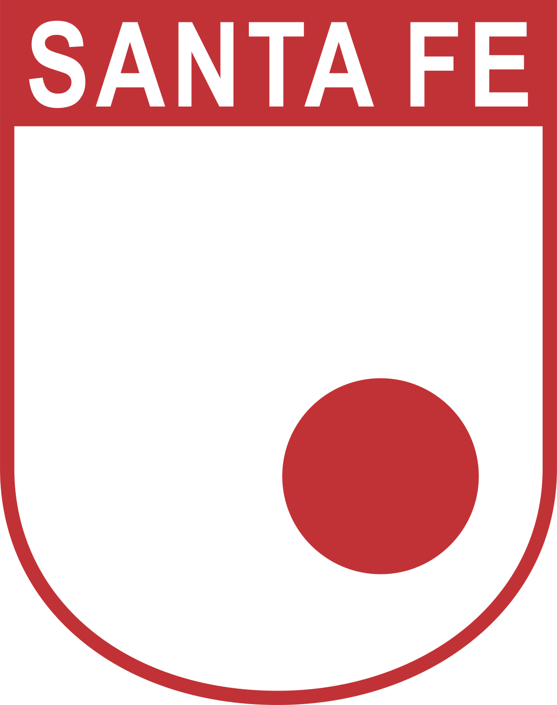

Carrera 30 y Calle 57, Bogotá, Cundinamarca
Nació por una iniciativa de varios estudiantes del Colegio Mayor de Nuestra Señora del Rosario y del colegio Gimnasio Moderno.
Conocido popularmente por su antiguo nombre de Independiente Santa Fe, es uno de los tres equipos que han jugado todas las temporadas en el fútbol profesional colombiano,
junto a Millonarios y Atlético Nacional, y es reconocido por ser el primer campeón en la historia, en 1948. Ha ganado seis títulos nacionales entre ese año y 1975.